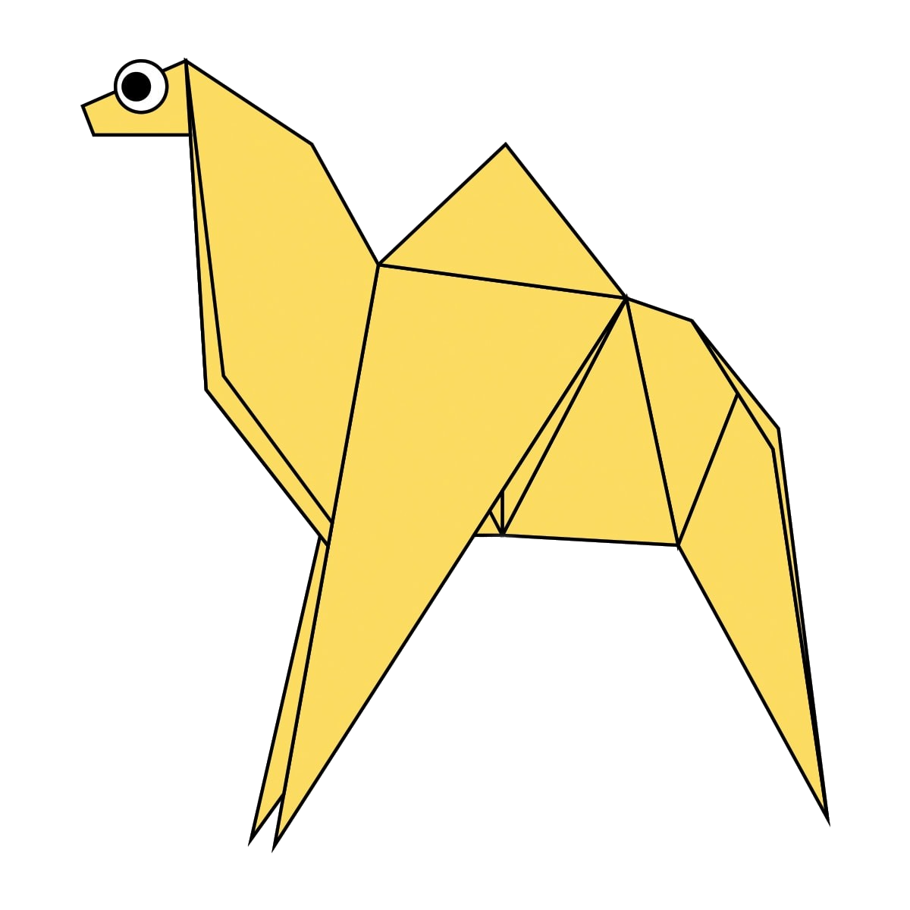
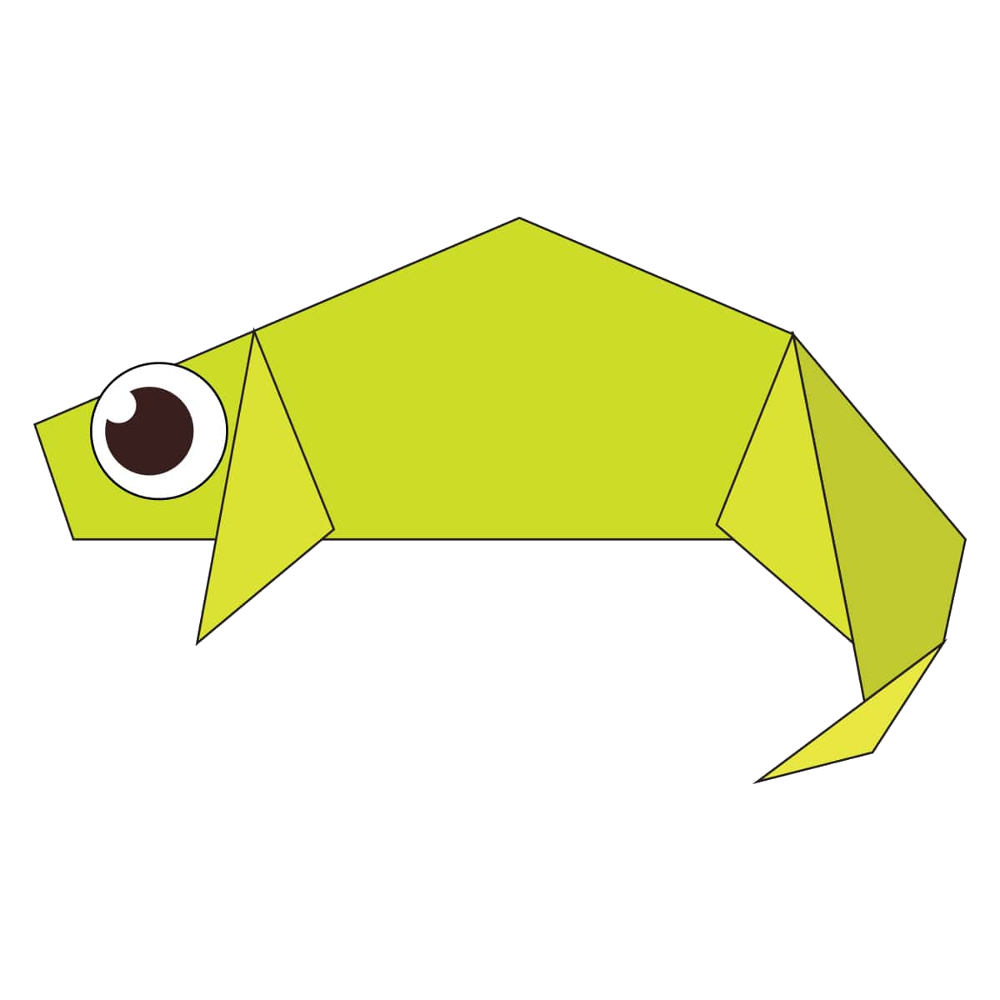
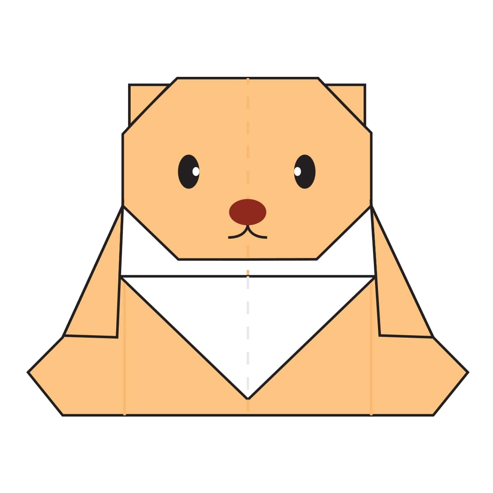

fun facts about camels
- There are two types of camels: One humped or “dromedary” camels and two humped Bactrian camels.
- Camels have three sets of eyelids and two rows of eyelashes to keep sand out of their eyes.
- Camels have thick lips which let them forage for thorny plants other animals can't eat.
- Their humps let them store up to 80 pounds of fat which they can live off for weeks and even months!
- When a camel finally does find water, he can drink up to 40 gallons in one go.
- Camels are very strong and can carry up to 900 pounds for 25 miles a day.
- Camels can travel at up to 40 miles per hour – the same as a racehorse!
- Don’t make a camel angry – they can spit as a way to distract whatever they think is a threat
- Mother camels carry their calves up to 14 months before giving birth.
- Some calves are born completely white and turn brown as their adult coat comes in.
- There are over 160 words for camel in Arabic alone

click here to see steps
Colorful Facts About Chameleons
- CHAMELEONS VARY WILDLY IN TERMS OF SIZE
- ALMOST HALF OF ALL KNOWN SPECIES LIVE IN MADAGASCAR
- THEIR FEET WORK LIKE SALAD TONGS
- Chameleons actual eyesight is great they can see small insects 5-10 meters away. They can also see in both visible and ultraviolet light.
- Chameleons feed by ballistically projecting their tongues often over twice the length of their body to catch prey, forming a suction cup as it hits its target.
- The chameleons tongue can reach its prey in just 0.07 split seconds, with the projectile acceleration reaching over 41 g's of force.
- Chameleons usually eat large insects such as locusts, grasshoppers, crickets, and stick insects, some bigger species also eat other lizards and young birds.
- Chameleons are not deaf but they do not actually have ear openings.
- Many species of chameleon have horn-like bumps or crests on their heads.
- Species of chameleon can be as small as 15 mm (0.59 in) or as large as 69 cm (27 in).

click here to see steps
anonymous facts about teddy bears
- The Oxford English Dictionary dates the first use of the term teddy bear to 1906.
- The Teddy Bears' Picnic song was originally called The Teddy Bear Two Step.
- The term bear-hug was first recorded in 1846.
- Do you know what to call a person who is too fond of or loves collecting teddy bears? – Arctophile, which combines the Greek words arctos (bear) and philos (loving/fond of).
- The first toy bear is believed to be made by German toy maker Margarete Steiff in 1902 that was a jointed, stuffed one.
- However, it was the 26th President of the US, Theodore “Teddy” Roosevelt, who was the inspiration behind the first teddy bear.
- American multi-billionaire investor Paul Greenwood owned the largest collection of teddy bears.
- In 2010, the US government auctioned his collection of 1300 teddy bears at Christie’s for £1.1 million.
- Japanese company Fujitsu has manufactured a teddy bear robot for adults that can make simple gestures and even small talk with humans.
- The term “bear hug” meaning a tight embrace was first used in 1846, almost 60 years before teddy bear was “born”.
- It was English Romantic writer Robert Southey who brought bears into the literary scene with the fairy-tale ‘Goldilocks and the Three Bears’ in 1834.

click here to see steps